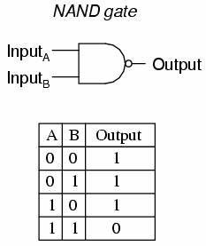

Chapter 1. Introduction and Overview
1.1 Physics of information
信息，是编码在物理系统里的；计算，是基于物理器件实现的。因此，信息论可以和物理过程联系起来。目前为止，人们对使用和操纵信息的物理约束有几个里程碑式的理解：
Landauer’s principle. Landauer(1961)指出信息擦除是个耗散过程(dissipative process)。他的理由是擦除总是伴随相空间的缩减，因此不可逆。例如，用一个放有单粒子的中间有隔板的盒子来存储1bit信息。信息擦除过程指的是我们瞬间抽掉中间的隔板，然后在最右侧墙壁插入隔板（不管之前粒子在左半边还是右半边），接着用隔板把粒子缓慢推往左半边，完成信息擦除。这个过程中，单粒子气体减小了的熵。进一步地，如果该过程是在温度下的恒温过程，那么外界对气体做功，这些能量耗散到热源。因此，擦除信息必然需要消耗能量。
Reversible computation. 逻辑门通常是不可逆的，比如NAND门 是2bit输入1bit输出，通过输出无法唯一确定输入。由于这个逻辑门会擦除1bit信息（对所有可能的输入做平均意义下），于是根据Landauer’s principle的要求，要运行这个逻辑门，外界至少做功。因此，如果供电电量有限，计算时长会存在一个理论上界。左下图是NAND门示意： 

然而，Bennett(1973)发现任意计算都能用可逆操作实现，因此原理上任意计算都可以没有耗散，即不会消耗能量。例如，我们可以构造上述NAND门的可逆版本——Toffoli门（右上图）——Toffoli门可以保留所有输入信息： 它表示从输入映射到输出。它是可逆的3bit输入门，只有前两位都是1才翻转第三位。Toffoli门中的那些行对应的输出output的第三列就对应NAND门。因此我们能够将一个不可逆计算NAND门转换成可逆计算Toffoli门，且原理上能够不产生能量损耗。当然，同时也产生了冗余的信息“垃圾”。有人会说，这个所谓的可逆（无耗散）计算只不过推迟了能量消耗，因为擦除这些冗余信息需要额外能量。对此，Bennett指出一个可逆计算机能够运行到计算结束，输出结果的拷贝（拷贝是恒等映射，因此是可逆计算），然后将之前的计算过程反向，恢复到初态。这样就不需要额外能量来擦除这些冗余”垃圾“信息了。
结论很惊奇，原理上做任何计算都可以不消耗能量！但现实中，每个逻辑门器件都会消耗远比$kT\ln2$大得多的能量。因此工程上讨论Landauer’s limit没太大价值。然而，当运算器件越来越小时，计算消耗的能量如果散发不出去，可能会让器件损坏，此时研究可逆计算就变得重要了。
Maxwell’s demon. 上述Landauer和Bennett的洞见引导了Bennett在1982年协调了麦克斯韦妖和热力学第二定律的矛盾。麦克斯韦想象了一盒气体，中间的隔板把它分为A，B两部分空间。隔板上有个demon操纵的小阀门，demon可以观察靠近阀门的气体分子，仅允许速度快的分子从A经过阀门进入B，而让速度慢的分子从B进入A。于是，A不断降温，B不断升温，且这个过程中几乎没有能量损耗（我们假设操纵阀门不需要能量，或者小到可忽略不计）。热量就这样从低温热源流向高温热源而不伴随任何能量损耗，显然违背了热力学第二定律。这就是著名的Maxwell’s paradox。
解决Maxwell’s paradox的关键是要理解demon 必须不断收集和存储气体分子的信息。如果demon的记忆容量有限，那么它就不能无限制地降低气体温度，因为当demon的记忆容量用完后，它必须清除记忆信息才能存储新的粒子信息；而擦除过程需要消耗能量，这些能量抵消了产生温度差（或降温）带来的好处。当然，这个解释会招来质疑：在记忆内存没用完之前，或demon不去擦除记忆，或者我们在擦除前研究整个系统的热力学，难道热二定律就可以不成立了吗？
为了回应这个质疑，我们就要在记忆擦除之前，定义与存储的信息相对应的信息熵。Leo Szilard(1929)在研究Maxwell demon中定义了1bit信息的概念（"bit"的名称是后来Tukey命名的），并且认为获取1bit信息等价于熵增加。显然Szilard并没有完全抓住Landauer’s principle的核心要点，因为后者说的是信息擦除必须要付出代价（熵or能量），而不是信息获取。但不管怎样，Szilard仍旧是研究信息的物理原理的一位先驱。
以上例子表明，物理学与信息论的学科交叉催生出了许多很有趣的结果，吸引了一大批物理学家和计算机科学家。
1.2 Quantum information
我们的核心思想就是一句话： 从根本上说，世界是由量子物理支配的，那么量子物理是如何揭示信息的本质的呢？
在量子理论早期，人们就已经认识到信息的经典认知需要修改了。比如，盖革计数器（量子原理支配）记录的击发(clicks )被认为是真正随机（truly random）的泊松过程；然而经典决定性(deterministic)力学并没有真正随机性之说（即便复杂一点的混沌系统也只是在效果上和随机相差无几，两者本质并不同）。
此外，不确定性原理要求，两个非对易物理量无法同时具有确定值。因此测量物理量A势必会影响紧接着的对B（与A不对易）的测量结果。所以获取系统信息的操作会不可避免干扰这个系统的状态，此限制在经典物理里并无对应。“获得信息”与“产生干扰”的取舍与quantum randomness有关。正是因为测量结果有个随机量（绝对相位），我们无法从测量结果推断初始态的所有信息，即初始的相位，而这正是测量所想得到的。
“获取信息产生干扰”也和量子与经典信息的另一个区别有关，即量子不可克隆原理(the no-cloning principle: quantum information cannot be copied with perfect fidelity) (Wootters, Zurek, Dieks in 1982)。假设我们的确可以完美克隆一个量子态，我们就能测量这个复制态的物理量，而不用干扰原来的态，不可克隆原理否定了这种可能性。相反，经典信息就可以完美复制，这也是我们能使用U盘拷贝的原因。
上述量子信息的性质很重要，但是量子信息与经典信息真正本质的区别还是John Bell(1964)指出的，量子力学的预测并不受局域隐变量理论（local hidden variable theory）支配。Bell提出量子信息被编码在物理体系不同部分的非局域关联（nonlocal correlations）中，这种关联在经典物理里找不到对应。
量子信息发轫于1980年代，1990年代全面开花。我们将会在后面讨论：量子信息压缩，编码在量子体系的经典信息的上下界，通过含噪声的量子信道传输的量子信息的上下界。
1.3 Efficient quantum algorithms
既然量子信息有这么多奇特性质，我们就期待量子理论可以更新我们对计算的认知。Peter Shor (an AT&T computer scientist and a former Caltech undergraduate)在1994年给了一个量子计算机高效地完成质因数分解的算法，堪比晴天霹雳。质因数分解是很难对付的(intractable)计算问题：答案一旦找到很容易验证，只要相乘就可以了；但问题是答案很难找到。如果$p$和$q$是很大的质数，那么他们的乘积$n=pq$很容易计算，基本的位操作(bit operations)数大约是$\log_2p\cdot\log_2q$，但给定$n$就很难找到$p$和$q$了。
经典计算机进行质因数分解公认需要$\ln(n)$的超越多项式(superpolynomial)时间（虽然还没被严格证明），即当$n$增长时，最差情况需要的时间比$\ln(n)$的任何次幂都大。最好的算法(the “number field sieve”)需要耗时约$\exp[(64/9)^{1/3}(\ln n)^{1/3}(\ln \ln n)^{2/3}]$。目前最大的运算量是几百个工作站算一个月，将130位数分解成65位数。由此推算，分解400位数需要$10^{10}$年，相当于宇宙年龄！质因数分解的难度就是现代公钥加密技术的基础，比如RSA加密技术。
然而Shor发现，量子计算机可以在多项式时间$O[(\ln n)^3]$内完成质因数分解计算。在量子计算机面前，现有的RSA技术将无法保密。
1.4 Quantum complexity
在Shor之前，已经有人对量子计算跃跃欲试。“量子系统可以用来执行计算”这件事分别由Paul Benioff和Richard Feynman在1982年独立提出。这个想法随着微电路的变小而自然产生，因为到很小尺度量子效应必然显著，Benioff就基于这个想法。但是Feynman的出发点很不一样，要了解Feynman的洞见，先得说说量子信息和计算的数学描述。
传统比特(bit)的最小单元用0和1两种状态表示，量子比特(qubit)用归一正交基$|0\rangle$和$|1\rangle$张成的二维复空间表示。一个归一化的量子比特表示为$|\psi\rangle=a|0\rangle +b|1\rangle$，其中$|a|^2+|b|^2=1$。其中$a,b\in\bold{C}$。我们可以测量$|\psi\rangle$到两个基的投影大小，测量结果是不确定的：投到$|0\rangle$的概率是$|a|^2$，$|1\rangle$的概率是$|b|^2$。
具有N个qubits的量子态可以用$2^N$维希尔伯特空间的向量表示，比如$|01110010 · · ·1001\rangle$。每个正交归一基被编号为$|x\rangle$，我们就可以定义这个空间里一般的态$\sum_{x=0}^{2^N-1}a_x|x\rangle$，其中$\sum_x|a_x|^2=1$。如果我们在每一位上都用${|0\rangle,|1\rangle}$正交基来测量N个qubits，那么得到$|x\rangle$态的概率为$|a_x|^2$。
现在可以开始讨论量子计算了。我们准备N个qubits的标准初态$|0\rangle|0\rangle · · · |0\rangle$，或表示成$|x=0\rangle$。然后对这个初态做幺正变换$U$（$U$可分解成标准化量子逻辑门的乘积，每个标准量子门每次只对几个qubits做幺正变换）。变换$U$完成后，测量所有qubits在基向量${|0\rangle,|1\rangle}$上的投影，这个测量值就是计算的输出结果，所以最终的输出结果是可以打印在纸上的经典信息。
我们注意到，量子算法是一种概率算法(probabilistic algorithm)，即由于量子测量过程的随机性，同样的程序可能得到不同的输出，最终得到的是所有可能输出的一个分布函数。实际上，Shor的因数分解算法也只能保证大概率能得到正确的质因数；当然这也可接受，因为很容易验证结果是否正确。
需要说明的是，尽管原理不同，量子计算机可以做的，经典计算机也都能做。经典计算机可以储存和旋转向量，也可以模拟量子测量过程（投影到正交基向量）。因此，经典计算机可以任意精度模拟量子计算机。用哪种计算机不是重点，因为什么是“可计算的”对两者来说相同。
但用经典计算机模拟量子计算机也有局限，需要考虑到这种模拟的时长。比如模拟$N=100$qubits的量子计算机，表示任意一个一般的状态$|\psi\rangle$就需要用到$2^{100}\approx10^{30}$个复数，这个存储能力远超任何经典计算机了，而且对$10^{30}$维向量进行旋转操作也远超任何经典计算机的计算能力。相比之下，用$N=100$经典比特表示的任意一个一般状态，尽管它也可以表示$2^{100}$个可能的状态，但只需要用长度为$N$的二进制字符串表示即可。这样的话，纵使经典计算机可以模拟量子计算机，当$N$变大的时候，模拟也会无能为力，因为希尔伯特空间是在太大了！Feynman正是基于此才考虑到，量子计算机或许可以执行经典计算机不可能完成的任务。
我们可以避免这个经典计算机能力的困境吗？反过来思考一下，我们只要求模拟能给所有可能的输出结果分配一个概率分布，但是中间过程不必完整模拟N-qubit的量子态演化过程。因此，我们可以设计一种经典算法的概率化版本(probabilistic classical algorithm)：输入并不唯一决定输出，而是输出结果服从与量子计算结果相同的概率分布。这是一种“局域的模拟”（local simulation）：每一步中，每个qubit有确定值，但处理这个qubit的量子逻辑门依据（伪）随机数选定所有可能的操作方式之一。这种模拟方式大大简化了完全跟踪量子态演化的方式。
但Bell不等式用数学定理不可辩驳地指出，这种模拟不可能实现：不存在局域的概率化算法可以复现量子力学的结果！【我注：量子关联是非局域的，即隐变量理论是不正确的】在这个意义上，用经典计算机模拟量子计算机是很困难的。
1.5 Quantum parallelism
Feynman的想法在1985年被David Deutsch解释地更具体，Deutsch指出量子计算机的潜能在于量子并行性(quantum parallelism)。考虑一个黑匣子，可以将一个比特$x$映射到另一个比特$f(x)$上，但我们不知道内部发生了什么。一共有四种可能的函数映射关系$f(x)$，要分别计算$f(0)$和$f(1)$的结果，需要消耗两倍时间。如果我们退一步，只是想验证$f(0)=f(1)$还是$f(0)\neq f(1)$，也还是需要做两次计算。
现在看看量子计算机能不能只用一次计算（消耗一倍时间）就能完成任务。尽管映射$f(x)$可能是不可逆的，但量子计算过程是幺正的且一定是可逆的。考虑幺正变换 此操作表示，若$f(x)=1$就翻转$y$，若$f(x)=0$则不做任何操作。Deutsch问的问题是，能不能只执行一次操作就验证$f(0)$与$f(1)$相同还是不同？
对于量子计算机，我们可以选取$|y\rangle$为叠加态，于是映射 此时将$f(x)$分离到了前面系数中（与$x$有关的相位项）。有了这个结果，再将$|x\rangle$也改成另一个叠加态： 最后，将第一个比特投影到另一组基向量$|\pm\rangle=\frac{1}{\sqrt{2}}(|0\rangle\pm|1\rangle)$上，如果得到$|+\rangle$则有$f(0)=f(1)$，若得到$|-\rangle$则有$f(0)\neq f(1)$。成功了！量子计算机只需要一次计算就可以完成任务，而不是经典计算机所必须的两次。这是因为量子计算机操作的不是单个态而是叠加态，可以一次获得不同可能态的全局信息，在这个意义上我们称它具有量子并行性(quantum parallelism)。
这个例子可以推广到作用在N-qubit上的函数$f(x)$，此函数具有$2^N$个参数，如$f(|0100...\rangle)$，因此要得到函数$f(x)$映射表需要执行$2^N$次计算。但量子计算机只需要执行幺正变换： 然后对存储在输入寄存器中的初态 只执行一次上述变换得到 函数$f$的全局信息都包含在了这个态中（输入寄存器和输出寄存器发生了纠缠），只要我们想个办法提取出来即可。函数再复杂都只需要计算一次，这就是量子并行性的威力。这种并行性也是Shor设计因数分解算法的出发点。
量子信息是编码在非局域关联（纠缠）中的，比如上述$f(x)$的信息包含在了量子计算机的输入寄存器和输出寄存器的纠缠中，如何提取这个非局域信息并不容易。因为一旦测量输入寄存器，它就会随机塌缩到某一个本征态$|x_0\rangle$，相应地，纠缠态被破坏，塌缩为$|x_0\rangle|f(x_0)\rangle$，因此测量输出寄存器只能得到$f(x_0)$，进一步测量就无法再得到其他可能输出值了，此时量子计算机并不比经典的强大。
Deutsch的解决方案告诉我们，如何巧妙利用编码在量子非局域关联中的有效信息是设计量子算法的关键。
1.6 A new classification of complexity
区分简单和困难的计算问题的标准应该是普适的，它不以使用高性能还是老破旧的计算机而改变。一般分为多项式时间(polynomial time)和指数时间(exponential time)。
任意算法A，都可以定义复杂度$T_A(N)$，$N$是用bit表示的输入长度。$T_A(N)$表示对任意N-bit输入所需最长时间步，即最坏情况下最长时间。多项式时间指的是$T_A(N)\leq\text{Poly}(N)$，即不会长于$N$的某个幂次。
如果不是多项式时间，统称为指数时间。当然也有超多项式(superpolynomial)时间$O(N^{\log N})$，远比指数时间小，但也被误称为指数时间。
这种对算法做区分的好处是，不管在什么样的计算机上，如果你的运行时间是多项式时间，那么用我的计算机运行同样的算法也需要多项式时间；即使运算不了，我也可以仿真你的计算机每一个操作步骤得到多项式时间，而且这种仿真也只需要多项式时间，综合效果还是多项式时间（当然需要排除掉那些“不现实”的计算机，比如有无穷多个结点的并行计算机）。
如果量子计算机也能被这样仿真，像1.4节中所说的那样，那么量子计算机就只是技术上的进步了，却无法让经典计算机的多项式时间这个数学事实改变（量子计算机也只是多项式时间）。然而Shor算法揭示了（并没有被证明），不可能用多项式时间来仿真一台量子计算机！这就改变了一切！数学意义上的复杂度对于经典的通用计算机（图灵机）还是成立的，但对于量子计算机或许不适用。我们需要量子版本的复杂度定义。
1.7 What about errors?
量子信息还有一个重要部分是量子纠错（quantum error correction），有了这个能力，量子计算的实用化才能看到曙光。正如之前所说，大部分量子信息储存在系统各部分的非局域关联中，如果一次只看某个子系统，只能获得微乎其微的信息。但是这种关联又很脆弱，很容易被破坏。大系统很难与环境完全隔绝，一旦系统和环境相互作用产生了关联，系统内部的量子信息就转移到了系统和环境的关联中去了，我们无法仅观察系统本身得到有用信息了。即使系统和环境相互作用很弱，对比较大的系统来说，这个效应发生地很快。
Erwin Schrodinger曾经揶揄量子力学主流解释的拥护者，说叠加态会导致一只又死又活的猫存在，这就是那只著名的“薛定谔的猫”：Schrodinger认为这个态是量子力学白玉之微瑕，因为现实中从没人看到过一只处于叠加态的猫。
量子力学发展至今，或许可以尝试回答Schrodinger的疑惑。薛定谔猫态理论上可以存在，但是它极端不稳定。因为猫不会脱离周围环境而存在（空气，地面，阳光照射过来的光子等）。假设有人制备了一个薛定谔猫态$|cat\rangle$，处于叠加态中的量子信息会瞬间转移到猫和环境的纠缠中消散而去。这是因为，环境和猫的相互作用，本质上是环境不断对猫进行测量，使得猫必须投影到$|dead\rangle$或$|alive\rangle$中的一个本征态，这个过程叫作“量子退相干”。【我注：至于为什么一定要选这组基而不是另外两个叠加态作为基，我猜想是这两个“能量”本征态的本征值相差很大造成的，即死猫和活猫的“能量”相差很大。so?】
同样道理，要执行复杂的量子计算，不可避免要搭建比较大的量子系统（也许没有猫那么大），但是大的量子系统不可避免要与环境接触导致退相干效应，使得量子计算机失效。换句话说，退相干会对量子信息引入误差，要让量子计算机正常工作，我们必须纠正误差。
此外，即使我们能把量子计算机与环境完全隔绝，我们也不能保证它的无误差运行。理想情况是对几个qubits做幺正变换$U$，但实际上变换会有误差$U=U_0(1+O(\varepsilon))$，即$U$会和$U_0$相差$O(\varepsilon)$，在$O(1/\varepsilon)$次逻辑门变换之后，误差将无法忽略。同样地，经典计算机也有这个问题，但是经典计算机可以将每次逻辑门操作产生的误差以热量形式耗散到环境中（想象双势阱中滚动的小球，计算引入的扰动可以通过降温耗散到环境中），从而避免影响计算结果。然而量子计算机恰恰相反，与环境的接触反而会破坏量子信息，正所谓甲之蜜糖乙之砒霜。当然，经典可逆计算也无法避免误差累积的问题。要消除误差的累积，必须耗散掉关于误差的信息。
不要急，经典纠错已经有解决方案了。比如将1bit复制为3bit重复的值$(0)\rightarrow(000)$，这样即使有一位出错变为$(100)$，也可以通过投票机制（majority voting scheme，少数服从多数）来纠错。当然这也只能以一定概率保证不出错。假设每一个bit出错的概率为$p$，则两个bit出错（翻转）的情况有三种，概率为$3p^2(1-p)$，三个同时出错的概率为$p^3$，因此，投票机制失败的概率为$3p^2(1-p)+p^3=3p^2-2p^3$。由于不使用投票机制的话（只用1bit）出错概率为$p$，所以如果让纠错方案更好，必须有$3p^2-2p^3<p$，即$p<1/2$。
若要更高的正确率，只需要再多加几位重复位即可，即使用N-bit重复位（尽管这样并不是效率最高的）。假设每一个bit独立同分布，其不出错的概率都是$P=1/2+\varepsilon$，由中心极限定理，当位数$N\rightarrow\infty$时，这些bit的平均值服从宽度为$1/\sqrt{N}$的高斯分布，此时投票机制出错的概率为$P_{error}\sim e^{-N\varepsilon^2}$。因此，对任意$\varepsilon>0$，只要重复位足够多（冗余度$N$足够大），我们就可以保证任意小的出错率。即使是$\varepsilon<0$也不是大问题，只需要明确投票机制给出的永远是相反的答案即可。唯一有问题的是$\varepsilon=0$情况，此时一串$N$bit的字符串完全随机，无法提供有用信息。
而量子纠错则会面临许多困难：
- Phase errors. 除了bit-flip errors，即qubit错误翻转$|0\rangle\rightarrow|1\rangle,|1\rangle\rightarrow|0\rangle$外，还会有phase errors，即$|0\rangle\rightarrow|0\rangle,|1\rangle\rightarrow-|1\rangle$。这个误差是很致命的，比如它会把态$\frac{1}{\sqrt{2}}(|0\rangle+|1\rangle)$变成其正交态$\frac{1}{\sqrt{2}}(|0\rangle-|1\rangle)$。
- Small errors. 量子信息是连续的，因此小扰动会把$a|0\rangle+b|1\rangle$的系数$a$和$b$改变小量，这些小量会随时间不断累积。相反，经典纠错纠正的是比较大的误差（翻转）。
- Measurement causes disturbance. 顾名思义，投票机制中，测量会干扰量子信息。
No cloning. 量子信息的复制受制于不可克隆定理，而经典信息可以完美复制。
1.8 Quantum error-correcting codes
量子问题有量子的解决办法。第一个量子纠错机制（quantum error-correcting code）是Peter Shor提出的，它是经典3bit重复位机制的延伸，但是要注意，对于量子信息，我们需要不通过测量信息本身就能纠错。考虑将1qubit编码成3qubits： 或写成叠加态： 我们将在不改变此叠加态的情况下纠正1bit翻转误差。当然，如果我们只测量一个qubit，那么还是会塌缩到其中一个本征态，使得系数$a,b$中蕴含的量子信息丢失。但我们也可以一次同时对两个qubit测量，同时测量就足够探测到是否有翻转误差了。对3qubit态$|x,y,z\rangle=|000\rangle\text{or}|111\rangle$，我们测量$(y\oplus z,x\oplus z)$，其中异或操作$\oplus$也可以等价定义为“相加后取模2”，我们发现$(y\oplus z,x\oplus z)$正好是被翻转的那个qubit位置的二进制表示。下面举两例说明。
如果仅有第一位翻转，得到$a|000\rangle+b|111\rangle\rightarrow a|100\rangle+b|011\rangle$，测量$(y\oplus z,x\oplus z)=(0,1)$，由于$(01){2进制}=(1){10进制}$告诉我们要把第1位qubit翻转过来，这样就完成了纠错。仅有第二或第三位翻转同样适用。
如果不是某一位翻转，而是一个小误差 那么$a|000\rangle+b|111\rangle\rightarrow \underset{算符(y\oplus z,x\oplus z)=(0,0)本征态}{(a|000\rangle+b|111\rangle)}+ \underset{算符(y\oplus z,x\oplus z)=(0,1)本征态}{(a\varepsilon|100\rangle+b\varepsilon|011\rangle)}$。此时测量$(y\oplus z,x\oplus z)$有很大概率($p=1-|\varepsilon|^2$)得到本征值$(0,0)$，同时也投影到正确的本征态上，消除了误差；也有小概率($p=|\varepsilon|^2$)得到本征值$(0,1)$，即上一个例子中的态，此时根据本征值只需翻转第一位bit即可完成纠错恢复到正确的态。对于$|000\rangle\rightarrow|000\rangle+\varepsilon_1|100\rangle+\varepsilon_2|010\rangle+\varepsilon_3|001\rangle$同样处理，会有小概率$O(|\varepsilon_i|^2)$投影到三个错误态（某一位翻转了）其中之一，而且本征值会告诉我们具体是哪一位。
至此，我们已经克服了量子纠错的后三个困难。我们可以不破坏叠加态的信息而进行测量(第3点)，量子测量可以将“有小误差的状态”投影到没有误差的态，或者投影到翻转了一个qubit的具有较大离散误差的态（第2点）。第4点被巧妙避开了，因为$a|\bar{0}\rangle+b|\bar{1}\rangle$并不是通过克隆得到的，它与克隆操作得到的三重拷贝态$(a|0\rangle+b|1\rangle)^3$不是一回事。
只有第1点困难phase errors还存在。因为一旦某一个qubit发生phase error，那么$a|\bar{0}\rangle+b|\bar{1}\rangle$就变成了$a|\bar{0}\rangle-b|\bar{1}\rangle$，量子信息就被破坏了，而且由于用了三个qubit，phase error发生的可能性变大成3倍了。不要怕，我们已经通过添加冗余的qubits解决了bit-flip error，现在我们来添加冗余的phases来解决phase-flip error！
跟随Shor，我们用将单个qubit用9-qubits来编码： 即用每组3qubits，一共3组同样的量子态构成的9qubits表示$|\bar{0}\rangle$和$|\bar{1}\rangle$。由于每一组内部是3qubit，可以用前面提到的方法进行每组内部的single bit-flip纠错。
现在假设某一组发生了phase flip，此误差改变了那一组里$|000\rangle$和$|111\rangle$的相对相位： 使得这一组与其他两组的phase不同。可以通过组与组两两比较（而不是测量一个组内部的相对相位从而破坏信息）找出发生phase flip的那一组进行纠错。这就需要一个6qubits的可观测量，例如用将所有6个bit翻转的观测量： 若两组的phase一样，则特征值为$+1$，反之如上为$-1$。因此只要做2次两两比较就能找出哪一组phase与其他两组不同，然后对那个组里某一个qubit做幺正相位变换即可完成纠错。
现假设9qubits中每一个bit的幺正变换都发生了误差。最一般的single-qubit unitary transformation (aside from a physically irrelevant overall phase) 可以展开到$O(\varepsilon)$： 最后三个Pauli矩阵可以看成bit flip算符$\begin{pmatrix} 0 & 1 \1 &0\end{pmatrix}$，phase flip算符$\begin{pmatrix} 1 & 0 \0 &-1\end{pmatrix}$，或这两个算符的合成$\begin{pmatrix} 0 & -i \i &0\end{pmatrix}$。
我注：假设$|0\rangle\equiv(1,0)$，$|1\rangle\equiv(0,1)$，那么bit flip表示为$\begin{pmatrix} 0 & 1 \1 &0\end{pmatrix}|0\rangle=|1\rangle$。其余以此类推。
如果制备了$a|\bar{0}\rangle+b|\bar{1}\rangle$初态，允许每个bit出现幺正误差，然后测量bit-flip和phase-flip，大部分情况又将系统投影回了初态，但有小概率$O(|\varepsilon|^2)$某一个bit出现较大误差：bit flip，或phase flip，或两者同时出现。从上述纠错机制，我们可以知道哪个qubit发生了bit flip，或哪一组发生了phase error，然后对单个qubit做幺正变换纠错。
【此段不理解】Error recovery will fail if, after the syndrome measurement, there are two bit flip errors in each of two clusters (which induces a phase error in the encoded data) or if phase errors occur in two different clusters (which induces a bit-flip error in the encoded data). But the probability of such a double phase error is of order $|ε|^4$. So for $|ε|$ small enough, coding improves the reliability of the quantum information.
上述机制避免了量子退相干，即避免了量子态与环境发生任何纠缠。
量子纠错也是个耗散过程，因为关于误差的信息从量子系统中被抹去了。误差信息记录在测量结果中，一旦结果被擦除，就以热量形式耗散掉了。
后续我们将进一步讨论量子纠错机制的几个方面：
- 如同经典纠错，存在有“好”的量子纠错机制允许我们得到任意高的可靠性，只要每个bit的错误率足够小。
- 我们之前假设，执行“纠错—恢复”过程本身是无瑕疵的。但是这种机制很复杂—要测量2qubit或6qubit的collective observables来诊断误差—因此也可能破坏数据。然而我们将会证明，尽管恢复过程有偶发的误差，它还是很有效的。
- 要操作量子计算机，不仅要能可靠存储量子信息，还要能处理它。我们将会展示用量子逻辑门的处理方式。
总结一下量子纠错机制：
- 误差被数字化。尽管量子信息误差可能是小量，我们还是可以将有误差的量子态投影到无误差态或有离散误差的态上，后者很容易纠错。
- 我们不测量数据就能测量误差的性质，因此不会获取（从而干扰）量子信息。
- 我们假设误差是局域的，尽管量子信息非局域。前面讨论有个很重要的隐含假设：在足够好的近似下，不同qubit的误差相互之间几乎无关联，即假设“同时造成2个qubits产生误差”的事件的发生概率远比“只导致1个qubit错误”的事件的概率要小的多。这当然是存疑的，如果误差之间的关联很大（误差有纠缠），上述纠错就不可靠了。换句话说，上述量子纠错机制就是利用了假设中的误差局域性和信息的非局域性（qubits之间的关联）的差别。只测量1个qubit是无法区分$|\bar{0}\rangle$和$|\bar{1}\rangle$的，因为有同样$1/2$概率得到$|0\rangle$或$|1\rangle$。要提取有用信息则需要一个3qubits可观测量（比如可以同时翻转一个组里的3qubits的可观测量，它就能通过本征值来区分$|000\rangle+|111\rangle$和$|000\rangle-|111\rangle$）。
- 环境也许偶尔会扰动单个qubit，等效于“测量”了它，但是单个qubit携带的信息几乎为零，因此扰动单个qubit不会破坏量子信息。量子纠错机制的基础，就在于非局域的信息不受局域干扰影响这个事实。
1.9 Quantum hardware
能操作qubit的硬件要求：
- Storage：能存储qubit足够长时间，来完成有意思的计算
- Isolation：与环境有效隔绝，最小化退相干
- Readout：高效可靠测量qubits
- Gates：能操纵单个qubit的状态和qubits之间的受控相互作用
- Precision：量子逻辑门必须要高精度
讲了量子计算机的实现方式，Ion Trap，Cavity QED，NMR，此处不再赘述。
1.10 Summary
- Quantum computers can solve hard problems.
- Quantum errors can be corrected.
- Quantum hardware can be constructed.
此课程和本书的目的就是将这三点展开讲解。